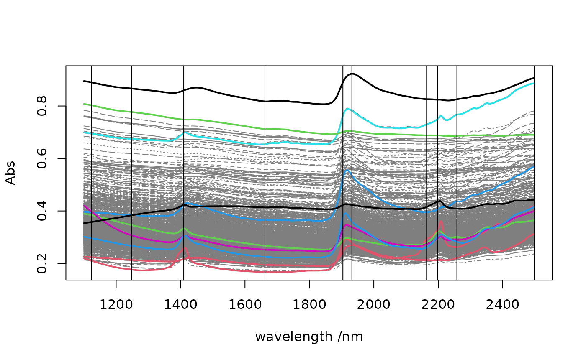

Select calibration samples from a data matrix using the Honings et al. (1985) method
honigs(X, k, type)a numeric matrix with absorbance or continuum-removed reflectance values (optionally a data frame that can be coerced to a numerical matrix).
the number of samples to select for calibration.
type of data: 'A' for absorbance (default), 'R' for reflectance, 'CR' for continuum-removed reflectance
a list with components:
'model': numeric vector giving the row indices of the input data
selected for calibration
'test': numeric vector giving the row indices of the remaining
observations
'bands': indices of the columns used during the selection procedure
The Honigs algorithm is a simple method to select calibration samples based
on their absorption features. Absorbance, reflectance and continuum-removed
reflectance values (see continuumRemoval) can be used (type
argument).
The algorithm can be described as follows: let \(A\) be a matrix of
\((i \times j)\) absorbance values:
the observation (row) with the maximum absolute absorbance (\(max(|A|)\)) is selected and assigned to the calibration set.
a vector of weights \(W\) is computed as \(A_j/max_A\) where \(A_j\) is the column of \(A\) having the maximum absolute absorbance and \(max_A\) is the absorbance value corresponding to the maximum absolute absorbance of \(A\)
each row \(A_i\) is multiplied by the corresponding weight \(W_i\) and the resulting vector is subtracted from the original row \(A_i\).
the row of the selected observation and the column with the maximum absolute absorbance is removed from the matrix
go back to step 1 and repeat the procedure until the desired number of selected samples is reached
The observation with the maximum absorbance is considered to have an unusual composition. The algorithm selects therefore this observation and remove from other samples the selected absorption feature by subtraction. Samples with low concentration related to this absorption will then have large negative absorption after the subtraction step and hence will be likely to be selected rapidly by the selection procedure as well.
The selection procedure is sensitive to noisy features in the signal.
The number of samples selected k selected by the algorithm cannot be
greater than the number of wavelengths.
Honigs D.E., Hieftje, G.M., Mark, H.L. and Hirschfeld, T.B. 1985. Unique-sample selection via Near-Infrared spectral substraction. Analytical Chemistry, 57, 2299-2303
data(NIRsoil)
sel <- honigs(NIRsoil$spc, k = 10, type = "A")
wav <- as.numeric(colnames(NIRsoil$spc))
# spectral library
matplot(wav,
t(NIRsoil$spc),
type = "l",
xlab = "wavelength /nm",
ylab = "Abs",
col = "grey50"
)
# plot calibration spectra
matlines(wav,
t(NIRsoil$spc[sel$model, ]),
type = "l",
xlab = "wavelength /nm",
ylab = "Abs",
lwd = 2,
lty = 1
)
# add bands used during the selection process
abline(v = wav[sel$bands])
